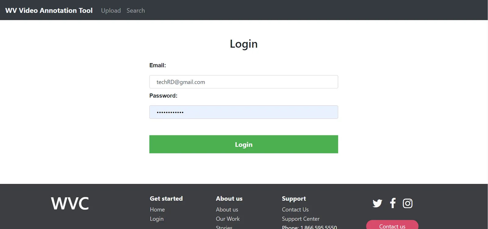
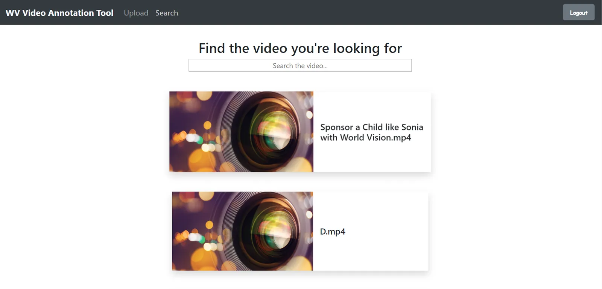
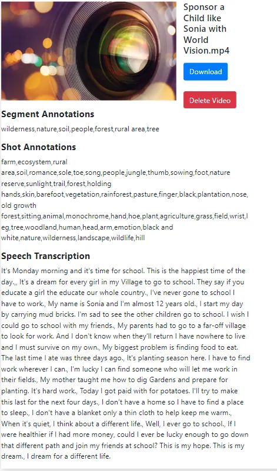

Web app · Machine-learning APIs
Video Intelligence
An internal efficiency tool that transcribes recorded audio to text and detects the objects in each scene — a bike, for example — then writes both into the video's metadata so it can be published to the internal resources website.
What it does
Tagging video by hand is slow. Video Intelligence sends uploaded footage to Google's Video Intelligence API, which returns a transcript of the audio and labels for the objects it recognizes. Those results are stored with the video and become searchable, so the team can find the right clip in seconds.
Walkthrough



Built with
- Angular
- Node.js
- Google Video Intelligence API
- Firebase Database
- Firebase Authentication